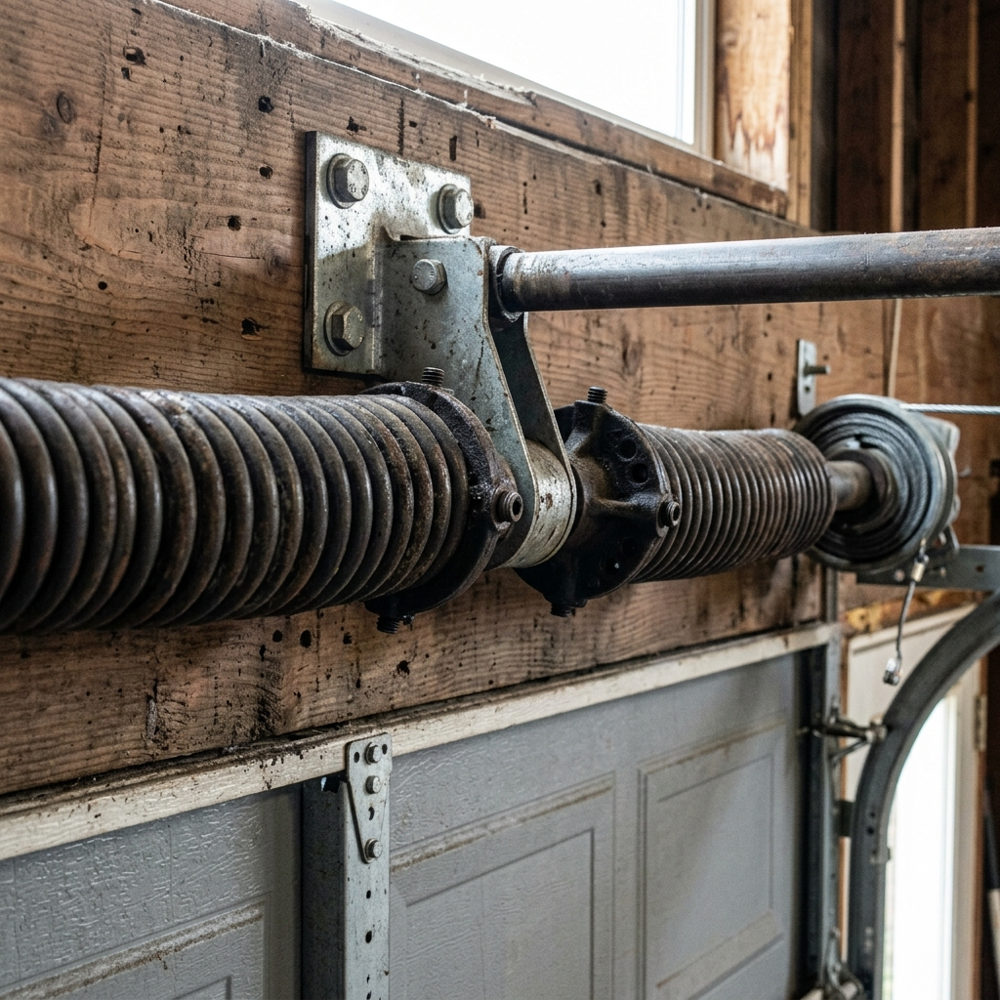

Flat-rate spring replacement in Wesley Chapel and Tampa Bay. No service fee — just fast, safe, done-right repair. One spring from $350, two springs $475.

Garage door springs do the heavy lifting — literally. They counterbalance the weight of your door (typically 150–300 lbs), making it possible for your opener motor or your arm to raise and lower the door with minimal effort.
There are two types of spring systems:
Available daily including weekends and holidays across Wesley Chapel and Tampa Bay.
$350 one spring, $475 two springs. No service fee, no surprise charges on the invoice.
Springs store hundreds of lbs of tension — never a DIY job. Our techs are trained and fully insured.
We carry springs for all major door brands and sizes — LiftMaster, Clopay, Wayne Dalton, CHI, and more.
Flat rate — no service fee. Parts and labor included. Price confirmed before any work begins.
Springs on the same door wear at the same rate. If one breaks, the other is likely within weeks or months of failing too. Replacing both at the same time saves you a second service call — and at $475 for two vs. $350 for one, it's rarely worth the risk.
Our technicians will always explain the condition of both springs and let you decide. We never pressure you into unnecessary work.
Garage door springs are under hundreds of pounds of tension. A spring that releases unexpectedly can cause severe injury or death. The tools required to safely install and tension springs are specialized — this is not a job for YouTube tutorials.
Our technicians are trained, equipped, and insured to handle spring replacement safely. From call to fix in under 2 hours — it's not worth the risk.
A broken spring turns your garage into a liability. Most calls are same-day.
A sudden loud bang from the garage is often a spring snapping. Don't open the door until it's inspected.
If your door feels like it weighs a ton when you try to lift it manually, the spring system has likely failed.
Most openers detect the unbalanced load of a broken spring and stop the door from opening fully as a safety measure.
A broken torsion spring will have a visible gap in the coil above the door. You can see this from inside the garage.
When springs break, the cables go slack. You may see them hanging off the drums or piled at the bottom of the door.
Your opener is running but the door barely moves — or doesn't move at all. This is a classic broken spring symptom.
Can't find your answer? Call us — we're available 24/7.
When your garage door spring breaks in Wesley Chapel, Lutz, Land O Lakes, New Tampa, or anywhere in the greater Tampa Bay area, Garage Door Geeks has you covered. We stock all standard torsion and extension spring sizes on our trucks and can handle most spring replacements the same day you call.
Broken springs are the #1 cause of garage doors that won't open. Many homeowners hear a loud bang — often at night or on weekends — and find their car trapped in the garage. We're available 24/7 for exactly these situations, and our pricing doesn't change based on when you call.
Our flat-rate pricing for spring replacement is simple: $350 for one spring, $475 for two springs. No service fee, no surprise charges. The quote you get on the phone is the price you pay.
Same-day service across Tampa Bay. Flat rate, no service fee.